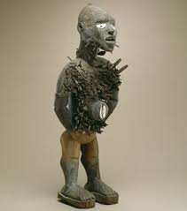

172. Power figure (Nkisi n’kondi). Kongo peoples (Democratic Republic of the Congo). c. late 19th century C.E. Wood and metal.
- Form
- Alert pose
- Rigid frontality
- Arms akimbo, in an aggressive stance
- Wears a headdress worn by chiefs or priests
- Nails are pounded into the figure
- Function and Context
- Spirits are embedded in the images
- Spirits can be called upon to bless or harm others, cause death or give life
- In order to prod the image into action, nails and blades are often inserted into the work or removed from it.
- Medical properties are inserted into the body cavity, thought to be a personś life or soul
- The figure has a role as a witness and enforcer of community affairs
- The figure also cautions people on the consequences of actions contrary to community norms